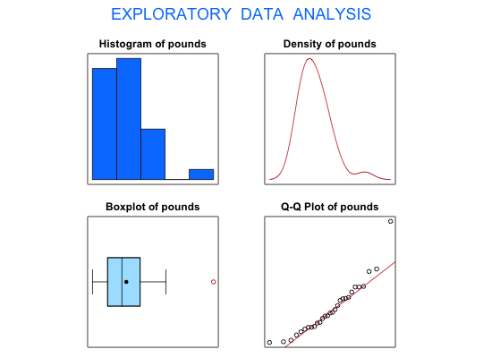

Data for Exercise 1.127
Disposal
A data frame with 29 observations on the following variable.
Kitchens, L. J. (2003) Basic Statistics and Data Analysis. Duxbury
str(Disposal)#> 'data.frame': 29 obs. of 1 variable: #> $ pounds: num 1.45 1.38 4.37 2.97 1.06 0.44 2.2 1.25 2.23 3.96 ... #>stem(Disposal$pounds)#> #> The decimal point is at the | #> #> 0 | 3348 #> 1 | 1344577 #> 2 | 022457 #> 3 | 04556 #> 4 | 0334 #> 5 | 56 #> 6 | #> 7 | #> 8 | #> 9 | 1 #> #>fivenum(Disposal$pounds)#> [1] 0.28 1.39 2.43 3.57 9.12 #>#> [1] "Disposal$pounds" #>#> Size (n) Missing Minimum 1st Qu Mean Median TrMean 3rd Qu #> 29.000 0.000 0.280 1.385 2.757 2.430 2.613 3.765 #> Max. Stdev. Var. SE Mean I.Q.R. Range Kurtosis Skewness #> 9.120 1.913 3.659 0.355 2.380 8.840 1.960 1.226 #> SW p-val #> 0.012 #>